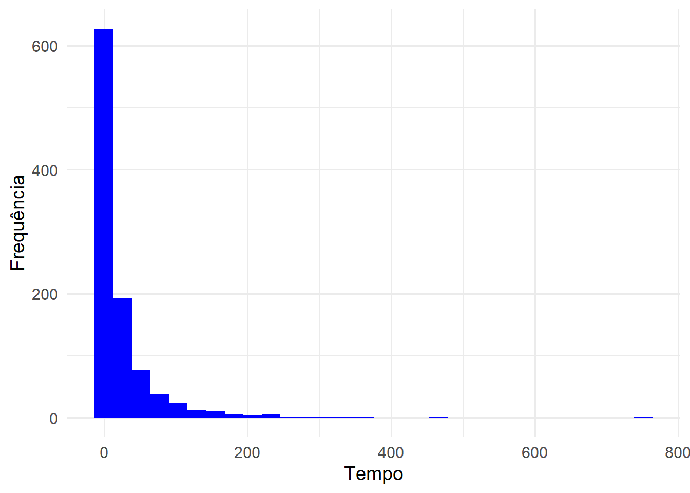
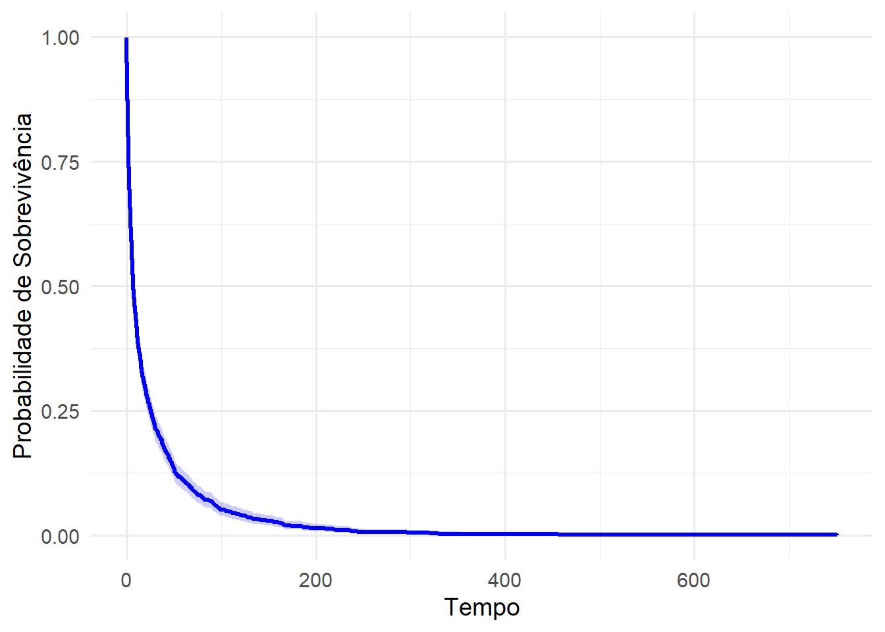

onde \(\theta = (\alpha, \beta_{0}, \beta_{1}, \ldots, \beta_{p})\). Toma-se as derivadas parciais em relação a cada parâmetro deste modelo, desta forma, tem-se:
Para qualquer outro coeficiente \(\beta_{k}\) para \(k = 1, 2, \ldots, p\), derivando, temos:
\[
\dfrac{\partial l(\theta)}{\partial \beta_{k}} = - \alpha \sum_{i = 1}^{n} \frac{\partial}{\partial \beta_{k}} \left[ \frac{t_{i}}{\exp\{\mathbf{x'}\boldsymbol{\beta}\}} \right] = - \alpha \sum_{i = 1}^{n} - \frac{t_{i} x_{ki}}{\exp\{\mathbf{x'}\boldsymbol{\beta}\}} = \alpha \sum_{i = 1}^{n} \frac{t_{i} x_{ki}}{\exp\{\mathbf{x'}\boldsymbol{\beta}\}}.
\] Para obter as estimativas para o vetor de parâmetros \(\theta\) temos que utilizar algum método numérico, pois não a solução análitica para as funções (não lineares) resultantes das derivadas.
Vamos a um exemplo usando dados simulados. Não há função pronta para simular tempos de vida acelerados de uma distribuição específica no R como, por exemplo, rexp, desta forma, adotou-se o método da inversa da distribuição acumalada.
Sabemos, para a distribuição exponencial, que \(F(t) = 1 - \exp\{ -\alpha t \}\), e ainda, \(F(t) = U\), onde \(U \sim Uniforme(0, 1)\). Logo, para simularmos uma variável aleatória que siga uma disitribuição exponencial de parâmetro \(\alpha\), temos:
\[
t = F^{-1}(U).
\tag{4.4}\]
Utilizando desta definição, temos para a distribuição exponencial de tempo de vida acelerado:
\[\begin{align*}
F(t) & = U \\
1 - \exp\{ -\alpha t \} & = U \\
-\alpha t & = \ln[ 1 - U ],
\end{align*}\]
assim,
\[
t = - \dfrac{ \ln[ 1 - U ] }{ \alpha }.
\tag{4.5}\]
Código
# -----------------------# [1] Ativação de Pacotes# -----------------------library(ggplot2)library(survival)# ----------------------------# [2] Distribuição Exponencial# ----------------------------# ------------------------------# [2.2] Simulação de Monte Carlo# ------------------------------# ---------------------------# [2.2.1] Função de Simulação# ---------------------------myRexp <-function(n, rate, coVariates, vecCoef) {set.seed(123456789)# Uniforme(0, 1) U <-runif(n, 0, 1)# Combinação linear dos preditores lineares effect <- coVariates %*% vecCoef# Tempos de sobrevivência times <--exp(effect) *log(1- U) / ratereturn(times)}# --------------------------# [2.2.2] Simulação de Dados# --------------------------set.seed(123456789)# Tamanho da amostra e número de variáveisn <-1000p <-2# Parâmetro da distribuição exponencialtaxa <-1# Matriz Designx1 <-rnorm(n, 0, 1)x2 <-rbinom(n, 1, 0.5)X <-matrix(data =c(rep(1, n), x1, x2),nrow = n, ncol = p +1)# Vetor de Coeficientes Betasbetas <-matrix(data =c(3/2, 2/3, 2), nrow = p +1, ncol =1)# Simulando o Tempo de SobrevivênciatimesSurv <-myRexp(n, taxa, X, betas)
Simulou-se uma amostra de tamanho \(1000\) e com duas covariáveis, também simuladas, sendo \(X_{1} \sim Normal(0, 1)\) e \(X_{2} \sim Bernoulli(0,5)\). O vetor de parâmetros utilizado na simulação foi \(\theta = (1, \ 3/2, \ 2/3, \ 2)\). Veja a Figura 4.1, que mostra o histograma e a estimativa de Kaplan-Meier para os dados simulados.
Código
# Histogramaggplot(data =data.frame(Tempo = timesSurv), aes(x = Tempo)) +geom_histogram(fill ="blue") +labs(x ="Tempo", y ="Frequência") +theme_minimal(base_size =14)# Probabilidade de Sobrevivênciacens <-rep(1, n)ekm <-survfit(Surv(timesSurv, cens)~1)ekm_data <-data.frame(time = ekm$time,survival = ekm$surv,lower = ekm$lower,upper = ekm$upper)ggplot(ekm_data, aes(x = time, y = survival)) +geom_step(color ="blue", size =1.2) +geom_ribbon(aes(ymin = lower, ymax = upper), fill ="blue", alpha =0.2) +labs(x ="Tempo", y ="Probabilidade de Sobrevivência") +theme_minimal(base_size =14)
Figura 4.1: Histogramas e Função de Sobrevivência estimada por Kaplan-Meier para os dados simulados.

(a) Histograma do Tempo de Sobrevida

(b) Função de Sobrevivência
Seguimos para a etapa de estimação de parâmetros. Será usado mesmo método, Iterativo de Newton-Raphson em diferentes funções. Uma das funções será a survreg do pacote survival e a outra usando optim para maximazação da verossimilhança. Usando a função survreg, obtemos as seguintes estimativas para os coeficientes \(\beta\).
Call:
survreg(formula = Surv(timesSurv, cens) ~ x1 + x2, dist = "exponential")
Value Std. Error z p
(Intercept) 1.5221 0.0456 33.4 <2e-16
x1 0.6911 0.0310 22.3 <2e-16
x2 1.9588 0.0635 30.9 <2e-16
Scale fixed at 1
Exponential distribution
Loglik(model)= -3545.2 Loglik(intercept only)= -4208.8
Chisq= 1327.24 on 2 degrees of freedom, p= 6.2e-289
Number of Newton-Raphson Iterations: 5
n= 1000
Nota-se que as estimativas obtidas pela função survreg são bem próximas dos verdadeiros parâmetros. Algo já esperado devido o tamanho da amostra simulada. Usando a função optim, obtemos as seguintes estimativas.
Código
# --------------------# [3.1] Via otimização# --------------------# ---------------------------# [3.1.1] Log-Verossimilhança# ---------------------------logVerossimil <-function(theta, coVariates, times) {# Comprimento do Vetor de observações n <-length(times)# Comprimento do vetor de parâmetros nPar <-length(theta)# Parâmetro de Taxa e Preditores Lineares rate <- theta[1] betas <- theta[2:nPar]# Combinação linear dos preditores lineares effect <- coVariates %*% betas# Função de Log-verossimilhança flv <- n * rate - rate *sum(times /exp(effect))return(-flv)}# --------------------# [3.1.1] Função optim# --------------------theta0 <-rep(1, 4) # Chute inicial# Aplicação do algoritmoestimate <-optim(par = theta0,fn = logVerossimil,method ="BFGS",hessian =TRUE,coVariates = X,times = timesSurv)# Resultadosestimate$par
```{=html}<style> body{text-align: justify}</style>```:::: progress::: {.progress-bar style="width: 100%;"}:::::::# Modelos de Tempo de Vida Acelerado## Introdução## Distribuição ExponencialEm modelos de tempo de vida acelerados a distribuição exponencial tem densidade expressa por:$$f(t) = \alpha \exp\left\{ - \alpha \left( \dfrac{t}{\exp\{\mathbf{x'}\boldsymbol{\beta}\}} \right) \right\}.$$ {#eq-densitExpMTVA}A partir de @eq-densitExpMTVA pode-se obter a função de sobrevivência, dada por:$$S(t) = \exp\left\{ - \alpha \left( \dfrac{t}{\exp\{\mathbf{x'}\boldsymbol{\beta}\}} \right) \right\}.$$ {#eq-StExpMTVA}Desta forma, é possível chegar na função de log-verossimilhança dada pela @eq-logVerExpMTVA para MTVA da distribuição exponencial.$$l(\theta) = \ln[\alpha] \sum_{i = 1}^{n} \delta_{i} - \alpha \sum_{i = 1}^{n} \dfrac{t_{i}}{\exp\{\mathbf{x'}_{i}\boldsymbol{\beta}\}},$$ {#eq-logVerExpMTVA}onde $\theta = (\alpha, \beta_{0}, \beta_{1}, \ldots, \beta_{p})$. Toma-se as derivadas parciais em relação a cada parâmetro deste modelo, desta forma, tem-se:$$\dfrac{\partial l(\theta)}{\partial \alpha} = \dfrac{1}{\alpha} \sum_{i = 1}^{n} \delta_{i} - \sum_{i = 1}^{n} \dfrac{t_{i}}{\exp\{\mathbf{x'}_{i}\boldsymbol{\beta}\}},$$para $\beta_{0}$, temos:$$\dfrac{\partial l(\theta)}{\partial \beta_{0}} = \alpha \sum_{i = 1}^{n} \dfrac{t_{i}}{\exp\{\mathbf{x'}_{i}\boldsymbol{\beta}\}}.$$Para qualquer outro coeficiente $\beta_{k}$ para $k = 1, 2, \ldots, p$, derivando, temos:$$\dfrac{\partial l(\theta)}{\partial \beta_{k}} = - \alpha \sum_{i = 1}^{n} \frac{\partial}{\partial \beta_{k}} \left[ \frac{t_{i}}{\exp\{\mathbf{x'}\boldsymbol{\beta}\}} \right] = - \alpha \sum_{i = 1}^{n} - \frac{t_{i} x_{ki}}{\exp\{\mathbf{x'}\boldsymbol{\beta}\}} = \alpha \sum_{i = 1}^{n} \frac{t_{i} x_{ki}}{\exp\{\mathbf{x'}\boldsymbol{\beta}\}}.$$Para obter as estimativas para o vetor de parâmetros $\theta$ temos que utilizar algum método numérico, pois não a solução análitica para as funções (não lineares) resultantes das derivadas.Vamos a um exemplo usando dados simulados. Não há função pronta para simular tempos de vida acelerados de uma distribuição específica no R como, por exemplo, `rexp`, desta forma, adotou-se o método da inversa da distribuição acumalada.Sabemos, para a distribuição exponencial, que $F(t) = 1 - \exp\{ -\alpha t \}$, e ainda, $F(t) = U$, onde $U \sim Uniforme(0, 1)$. Logo, para simularmos uma variável aleatória que siga uma disitribuição exponencial de parâmetro $\alpha$, temos:$$t = F^{-1}(U).$$ {#eq-MTransforInv}Utilizando desta definição, temos para a distribuição exponencial de tempo de vida acelerado:```{=latex}\begin{align*} F(t) & = U \\ 1 - \exp\{ -\alpha t \} & = U \\ -\alpha t & = \ln[ 1 - U ],\end{align*}```assim,$$t = - \dfrac{ \ln[ 1 - U ] }{ \alpha }.$$ {#eq-ExpMTV}```{r message=FALSE, warning=FALSE}# -----------------------# [1] Ativação de Pacotes# -----------------------library(ggplot2)library(survival)# ----------------------------# [2] Distribuição Exponencial# ----------------------------# ------------------------------# [2.2] Simulação de Monte Carlo# ------------------------------# ---------------------------# [2.2.1] Função de Simulação# ---------------------------myRexp <- function(n, rate, coVariates, vecCoef) { set.seed(123456789) # Uniforme(0, 1) U <- runif(n, 0, 1) # Combinação linear dos preditores lineares effect <- coVariates %*% vecCoef # Tempos de sobrevivência times <- - exp(effect) * log(1 - U) / rate return(times)}# --------------------------# [2.2.2] Simulação de Dados# --------------------------set.seed(123456789)# Tamanho da amostra e número de variáveisn <- 1000p <- 2# Parâmetro da distribuição exponencialtaxa <- 1# Matriz Designx1 <- rnorm(n, 0, 1)x2 <- rbinom(n, 1, 0.5)X <- matrix( data = c(rep(1, n), x1, x2), nrow = n, ncol = p + 1)# Vetor de Coeficientes Betasbetas <- matrix(data = c(3/2, 2/3, 2), nrow = p + 1, ncol = 1)# Simulando o Tempo de SobrevivênciatimesSurv <- myRexp(n, taxa, X, betas)```Simulou-se uma amostra de tamanho $1000$ e com duas covariáveis, também simuladas, sendo $X_{1} \sim Normal(0, 1)$ e $X_{2} \sim Bernoulli(0,5)$. O vetor de parâmetros utilizado na simulação foi $\theta = (1, \ 3/2, \ 2/3, \ 2)$. Veja a @fig-HistAnalistSobr, que mostra o histograma e a estimativa de Kaplan-Meier para os dados simulados.```{r message=FALSE, warning=FALSE}#| fig-cap: "Histogramas e Função de Sobrevivência estimada por Kaplan-Meier para os dados simulados."#| fig-cap-location: top#| fig-subcap: #| - "Histograma do Tempo de Sobrevida"#| - "Função de Sobrevivência"#| layout-ncol: 2#| label: fig-HistAnalistSobr# Histogramaggplot(data = data.frame(Tempo = timesSurv), aes(x = Tempo)) + geom_histogram(fill = "blue") + labs(x = "Tempo", y = "Frequência") + theme_minimal(base_size = 14)# Probabilidade de Sobrevivênciacens <- rep(1, n)ekm <- survfit(Surv(timesSurv, cens)~1)ekm_data <- data.frame( time = ekm$time, survival = ekm$surv, lower = ekm$lower, upper = ekm$upper)ggplot(ekm_data, aes(x = time, y = survival)) + geom_step(color = "blue", size = 1.2) + geom_ribbon(aes(ymin = lower, ymax = upper), fill = "blue", alpha = 0.2) + labs(x = "Tempo", y = "Probabilidade de Sobrevivência") + theme_minimal(base_size = 14)```Seguimos para a etapa de estimação de parâmetros. Será usado mesmo método, Iterativo de Newton-Raphson em diferentes funções. Uma das funções será a `survreg` do pacote `survival` e a outra usando `optim` para maximazação da verossimilhança. Usando a função `survreg`, obtemos as seguintes estimativas para os coeficientes $\beta$.```{r message=FALSE, warning=FALSE}# -----------------------------------# [3.1] Ajuste pelo Pacote "Survival"# -----------------------------------fit1 <- survreg(formula = Surv(timesSurv, cens)~x1 + x2, dist = "exponential")summary(fit1)```Nota-se que as estimativas obtidas pela função `survreg` são bem próximas dos verdadeiros parâmetros. Algo já esperado devido o tamanho da amostra simulada. Usando a função `optim`, obtemos as seguintes estimativas.```{r message=FALSE, warning=FALSE}# --------------------# [3.1] Via otimização# --------------------# ---------------------------# [3.1.1] Log-Verossimilhança# ---------------------------logVerossimil <- function(theta, coVariates, times) { # Comprimento do Vetor de observações n <- length(times) # Comprimento do vetor de parâmetros nPar <- length(theta) # Parâmetro de Taxa e Preditores Lineares rate <- theta[1] betas <- theta[2:nPar] # Combinação linear dos preditores lineares effect <- coVariates %*% betas # Função de Log-verossimilhança flv <- n * rate - rate * sum(times / exp(effect)) return(-flv)}# --------------------# [3.1.1] Função optim# --------------------theta0 <- rep(1, 4) # Chute inicial# Aplicação do algoritmoestimate <- optim( par = theta0, fn = logVerossimil, method = "BFGS", hessian = TRUE, coVariates = X, times = timesSurv)# Resultadosestimate$par```## Distribuição WeibullPara tempos de vida acelerados que seguem distribuição Weibull, temos a seguinte forma para sua densidade:$$f(t) = \dfrac{\gamma}{\alpha^{\gamma}} t^{\gamma - 1} \exp\left\{ - \left( \dfrac{t}{\alpha \exp\{\mathbf{x'}\boldsymbol{\beta}\}} \right)^{\gamma} \right\}.$$ {#eq-densitWeibMTVA}E função de sobrevivência expressa por:$$S(t) = \exp\left\{ - \left( \dfrac{t}{\alpha \exp\{\mathbf{x'}\boldsymbol{\beta}\}} \right)^{\gamma} \right\}$$ {#eq-StExpMTVA}:::: progress::: {.progress-bar style="width: 100%;"}:::::::